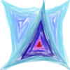

Swarm
You are the Monster.
Enter: The hero. Welcome hero. Hero has valiantly offered to take back the lands of the triflappers! It was taken away long ago by the evil swarm... Brutal monsters of unknown origin. He strode in flapping his triangular wings wielding a weapon of blue triangles.

Here is a swarmy. He's all spirally and cruelly round. Just look at the thing. Now surely he will attack! Hero is ready though. He prepares his triangle. What's this? Why is he not moving? Surely it can't be... that the swarmy is your conciousness! Wouldn't it be awful if you were this awful thing? If you moved with "WSAD" / ",AOE"? Oh no! The swarmy can shoot! And you are causing this with the mouse! How evil!
Swarmies are pack hunters. If one dies his conciousness is transferred to another. Like all creatures in Bright Land, they fade as they lose health until they disappear forever.
Play!Thanks to Kevin MacLeod at Incompetech for the music, EDM Detection Mode!